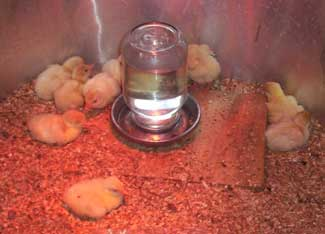

In the early 1960s, there was a commercial interest in developing miniature versions of the broad breasted large white and bronze turkeys. Experiments to produce small turkey broilers (6 to 9 pounds) had been disappointing due to immature fleshing and finish. The only available turkeys in this lower weight range were the Beltsville white turkeys.
The Beltsville whites were characterized by excellent reproductive ability; however, their poor fleshing and body conformation were unpopular with many consumers. This led to attempts to develop a small version of the large broadbreasted stocks. Several miniature turkey lines were developed, but all suffered from poor reproductive performance. Most of these originated from crosses between broadbreasted large stocks and the Beltsville whites, with subsequent selection for small size. Some were backcrosses to the large, broadbreasted stocks, followed by more selection.
At the University of Massachusetts, J. R. Smyth Jr. crossed an excellent line of broad-breasted whites with royal palm turkeys he had obtained from Dr. Edward Buss of Pennsylvania State University. The royal palms were a small exhibition strain, with reasonably good breast fleshing. Starting with the first generation crossbreds, Smyth selected on an individual bird basis (no records of specific pedigrees were kept) for small size, good breast fleshing and total balance.
After three generations, a financial problem and need for more space for other experiments necessitated that Smyth get rid of his miniatures. Reluctant to see them lost, he gave them to one of the farm workers who had contacts with exhibition breeders of poultry. The farm worker, in turn, swapped them to a breeder in Wisconsin for some show bantams. At the time Smyth gave them away, they were still showing palm, silver bronze and white plumage patterns.
In the late summer of 1971, B.C. Wentworth received a call from an avian fancier in Wisconsin. He had six turkeys (two toms and four hens) from a very small line, which he was unable to keep over the coming winter. He wanted to know if Wentworth was interested in this stock. Wentworth picked up these birds and found that they had wing bands. In addition to the numbers, the backside of each band had the abbreviation “U of Mass.” Wentworth realized these were the midget white turkeys that Smyth had been developing at the University of Massachusetts.
During the spring of 1972, these midget white turkeys were photostimulated with 14 hours of light and 10 hours of darkness to induce egg-laying. Wentworth mated these Midget turkeys artificially. During March, tom “A” was mated with two hens and tom “B” was used to mate with the other two hens. These eggs were all set and poults from the April hatch were pedigreed. Starting the first of April, the two toms were switched to mate with the opposite two hens. The eggs were collected during May and a second hatch was obtained in June. The poults from the second hatch were also pedigreed (records were kept of each bird’s lineage). The poults from the second mating may not have been an accurate pedigree, because the eggs saved in May could have been fertilized by the male used in March.
Wentworth used a rigorous pedigree approach to expand this flock of Midget white turkeys each year with great effort to avoid further inbreeding. He fixed the white color and continued to improve fleshing over the years. In the late 1970s an embryonic lethal gene began to be expressed (causing some poults to die before hatching). Over a period of about three years Wentworth was successful in eliminating the stock carrying this lethal gene.
From the mid ’70s on, selection pressure was maintained to fix tom body weight to about 13 pounds and hens at about 8 pounds. About every third year, breast meat volume was included as selection index in addition to body weight. Wentworth selected annually for higher egg production, fertility and hatchability. The hatchability averaged about 80 percent when the flock was dispersed. The original stock Wentworth obtained did not lay very well, averaging only about 30 or 40 eggs during a breeding season.
Currently the midgets lay 60 to 80 eggs per year. The eggs are quite large and appear similar to the eggs laid by the large broadbreasted lines of turkeys; they weigh only 3 to 5 grams less. The midget white turkey has the appearance of a miniature of the large commercial white line, for it has a very broad breast. This is not a commercially economically important meat bird, as Wentworth estimates the feed conversion is about 4 pounds of feed per pound of weight gain.
The midget white turkeys do not have any direct genetic relationship to the Beltsville white turkey.
|
 HILARY CHESTER/ALWAYS SOMETHIN' FARM These midget white turkey poults (chicks) will grow up to be friendly, productive birds. |
|
|